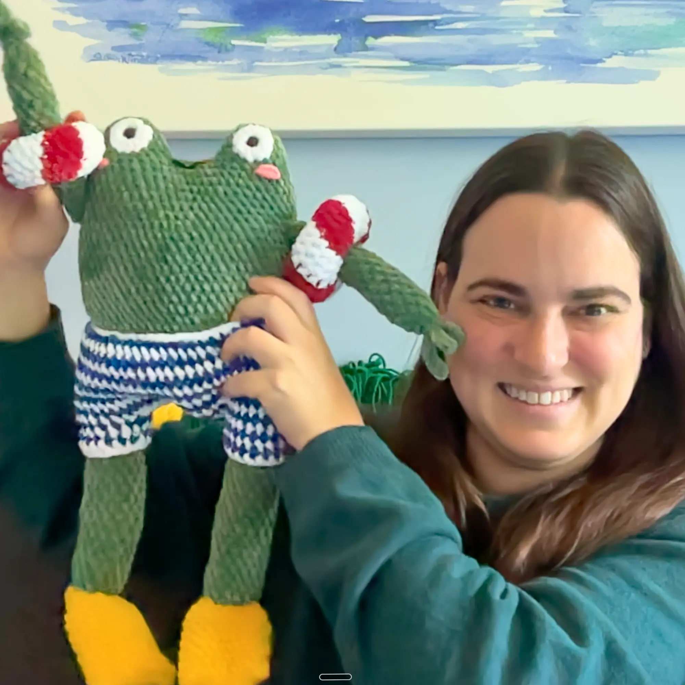

Row Counter
Rows
Count: 0
Stitches
Count: 0
About

Hi, I’m May from May May’s Crochets! 👋 I’m a crocheter and a coder. When I was starting out I couldn't find a stitch & row counter that was simple, lightweight, and worked the way I wanted — so I built one and shared it for free. ✨ It's ad-free by design, and I'd love to keep it that way. If you want to support me, here are a few easy ways:
- 🧶 If you're shopping for yarn, use my Premier Yarns affiliate link — they're genuinely my favorite yarns to work with, and it supports this tool at no extra cost to you
- ▶️ Subscribe to my YouTube channel for amigurumi makes, free pattern tutorials, and my crochet journey — it really helps me out
- 🏡 Try Stitch Haven, my full crochet and knitting project hub that grew out of this little counter
- 💖 Or leave a small tip to support my work
Happy counting! 🧮